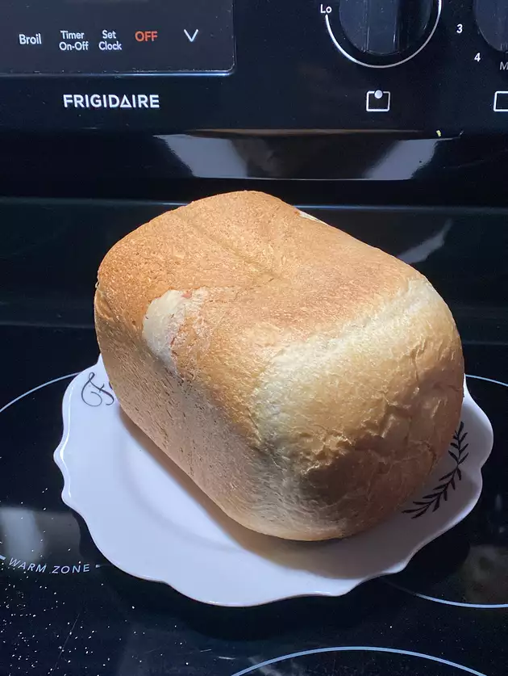

Bread

Ingredients
- 1 cup warm water
- 3 tablespoons white sugar
- 1.5 teaspoons salt
- 3 tablespoons vegetable oil
- 3 cups bread flour
- 2.25 teaspoons active dry yeast
Steps
- Place water, sugar, salt, oil, bread flour, and yeast into the pan of the bread machine (or in the order recommended by your bread machine manufacturer).
- Bake on White Bread setting. Cool on wire racks before slicing.